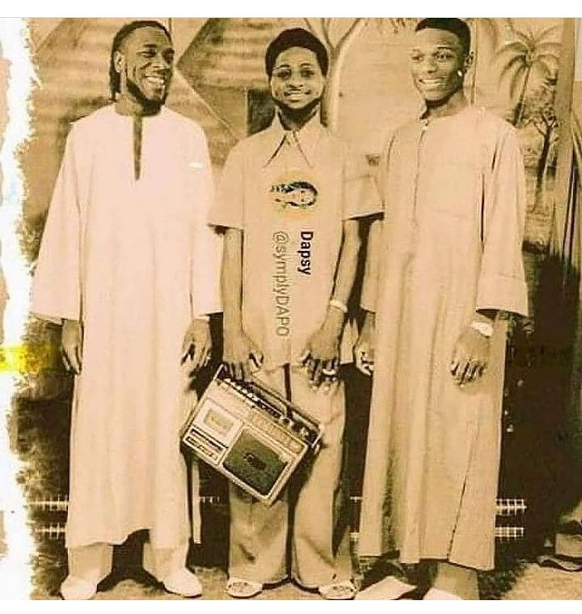

Enoch Adejare Adeboye is a Nigerian pastor, General Overseer of Redeemed Christian Church of God in Lagos.
2 March 1942 (age 80 years), Osun
Foluke Adeboye
Dare Adeboye, Leke Adeboye, Adeolu Adeboye, Bolu Adeboye
Esther Adetoun
Moses Adeboye, Esther Adeboye